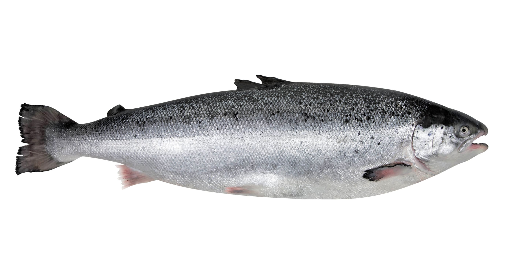

Descripción de su hábitat y estilo de vida:
Es una especie anádroma, y pasa de los mares fríos a los ríos donde se produce la puesta y fertilización de los huevos. En estos permanecerán los alevines por un plazo de unos dos años antes de ir al mar. Cuando empieza la migración es cuando su carne está en mejor momento. Come peces más pequeños, crustáceos e insectos. Los salmones nacen en aguas dulces, migran al océano y vuelven a las aguas dulces para procrear. También conocido como Reo, Salmón del Atlántico o Salmón europeo. Es un pescado azul y de agua dulce o agua salada. Pertenece a la familia de Salmonidae.
Características: